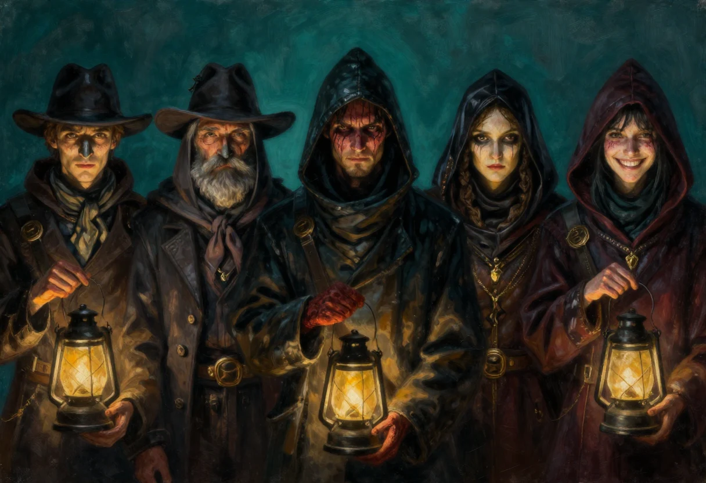

Décrire un personnage n'est pas remplir une fiche signalétique. C'est choisir deux ou trois traits qui tiendront lieu du reste, et laisser la table compléter. Les listes qui suivent sont mon garde-manger : je n'en sers jamais plus de trois par personnage, et jamais les plus attendus. Un nez busqué, une démarche coulée, un rire forcé, et le bonhomme est debout.
Deux règles que je me suis données. Première règle : un trait doit se voir en une seconde de jeu, sans que le meneur ait à l'expliquer autour de la table. Deuxième règle : un trait doit pouvoir changer d'emploi, servir aussi bien pour un marchand que pour un garde, pour une mendiante que pour une duchesse. Une liste qui ne sert qu'à un seul personnage est une liste morte.
Le premier registre est celui qu'on voit avant d'avoir parlé. Il se joue en une seule ligne du regard, du nez au menton, et c'est souvent de là que part le surnom que les autres donneront au personnage.
| Registre | Descripteurs |
|---|---|
| Nez | cassé, busqué, aquilin, en trompette, droit, pointu, porcin, épaté, imposant, hypertrophié, poilu, rouge, quelconque. |
| Regard | œil mort, borgne, aveugle, strabisme, chassieux, fuyant, doux, émouvant, farouche, yeux globuleux, larmoyant, triste, sourcils tombants, vif, monocle, lunettes, fou, halluciné, bovin, éteint, absent, idiot, fatigué, désabusé, sourcils épais, sourcils broussailleux, sourcils fins, sourcils montants, œil au beurre noir, arcade sourcilière ouverte, vairon, orbites creusées. |
| Bouche et dentition | parfaite, édentée, sensuelle, lippue, bec-de-lièvre, dentition chaotique, dents du bonheur, hypertrophie dentaire, lèvres fines, chiqueur de tabac à la menthe ou d'autre chose, fumeur de pipe ou de cigare, dentition tachetée, jaunie, dents en or, dentier, dents en acier, lèvres éclatées, bouche baveuse. |
| Cheveux | hirsutes, chauve, rasé, longs, coiffés en arrière, coiffés en bol, coiffés en brosse, gras, sales, frisés, bouclés, fins, plaqués, épais, tressés, raie au milieu, perruque, crête, dégarni, calvitie erratique en touffes de cheveux. |
| Peau | parfaite, veloutée, grasse, luisante, albinos, rougeaude, cireuse, laiteuse, pâle, boutonneuse, bronzée, mate, ridée, grêlée, balafrée, grains de beauté, taches de rousseur, brûlures, cicatrices, jaunissement. |
| Pilosité faciale | imberbe, glabre, mal rasé, rasé de frais, barbe épaisse, fine, carrée, pointue, bouc, moustaches épaisses, fines, frisées, collier de barbe, duvet, pattes, rouflaquette, pattes de lapin, favoris. |
| Visage | ovale, poupard, osseux, sec, squelettique, pommettes saillantes, triangulaire, longiligne, front bas, menton carré, front haut, tête de fouine, visage tuméfié, amoché, tête de bouledogue, joues creuses, émacié, faciès simiesque. |
| Corpulence | obèse, athlétique léger, athlétique moyen, athlétique lourd, grand, échalas, petit, chétif, léger, aérien, trapu, râblé. |
Les registres qui suivent ne se voient qu'une fois le personnage lancé : il entre, il parle, il s'assoit. C'est là que se gagne la moitié de l'impression produite, parce qu'une voix mal placée contredit un beau visage et qu'une démarche traînante excuse une veste élimée.
| Registre | Descripteurs |
|---|---|
| Démarche | féline, heurtée, tremblante, coulée, légère, lourde, traînante, assurée, volontaire, empressée, anxieuse, dégingandée. |
| Voix | bègue, cassée, éraillée, rauque, nasillarde, muette, petite, timide, grosse, autoritaire, flûtée, douce, apaisante, monocorde, difficultés respiratoires, chevrotante, chantante, stridente, aphone, cheveu sur la langue. |
| Accent | abominable, marqué, léger. |
Il y a enfin trois registres que je garde pour les personnages qui reviennent, ou pour ceux que la table doit reconnaître avant de les voir. Un tic, une odeur, une manière de rire : ce sont des marques de propriété. Le joueur les retient sans effort, et le meneur n'a plus besoin de dire qui arrive.
| Registre | Descripteurs |
|---|---|
| Spécial | sudation abondante, mains moites, forte odeur corporelle de parfum, de saleté, de sueur ou de tabac, mauvaise haleine, poilu, poitrine opulente, manchot, cul-de-jatte, crochet et autres prothèses, bossu, jambes arquées, pied-bot, doigts coupés, sourd, efféminé, androgyne, maquillage, tatouage, paralysie faciale, paralysie d'un membre ou d'une main, tremblements, sénescence, oreilles décollées, vultueux, malade, tics et convulsions faciales, ongles longs et infectieux, postillonneur, verrues disgracieuses, jambe de bois, couleur capillaire changeante, température corporelle inhabituelle, mise insolite faite d'habits riches et usés, ou jurant avec la manière et l'hygiène du porteur, piercing nasal, aux oreilles, aux lèvres ou à la langue. |
| Rire | idiot, nerveux, hystérique, dément, diabolo-sylvestrin dit grominesque, égrillard, franc, sardonique, strident, syncopé, étouffé, grave, sonore, condescendant, forcé. |
| Idiosyncrasie | sifflote, petit rire nerveux, renifle, toussote, claque sa langue, se lisse une mèche ou la moustache, se recoiffe, crache, se racle la gorge, se gratte la nuque ou le torse, exécute un rite gestuel pour conjurer le mauvais sort, se signe, récite un psaume, prie, se frappe le torse, joue avec une pièce, une dague, une balle, un Yo-Yo, des cartes, un bilboquet ou un pendentif, jure, fredonne, s'humecte les lèvres, tape du pied, cille, papillonne, croise les bras, se tient le menton ou le bouc, s'évente, gestuelle enflammée et parle avec les mains, gestuelle fluide et gracieuse, moue dubitative, grimace, gloussements, se ronge les ongles, se cure les dents. |
Le registre de l'attitude ne décrit pas un corps, il décrit une manière d'être en société, et c'est le plus utile comme le plus dangereux : utile parce qu'il tient en un mot, dangereux parce qu'il enferme le personnage dans un rôle. Je ne l'ouvre qu'après avoir posé le physique, et je le laisse toujours déborder d'un cran, vers une famille voisine. Une fierté aristocratique qui glisse vers la hauteur, une familiarité qui glisse vers la grivoiserie.
| Famille | Descripteurs |
|---|---|
| Hauteur | aristocratique, guindée, maniérée, arrogante, hautaine. |
| Misère | pathétique, misérable, dépressive, lugubre, morbide. |
| Flagornerie | obséquieuse, doucereuse, chafouine, matoise. |
| Vulgarité | triviale, sans-gêne, familière, égrillarde, grivoise, inconvenante, obscène. |
| Amabilité | séductrice, douce, accorte, affable, aimable. |
| Provocation | provocatrice, narquoise, espiègle, grinçante, sardonique. |
| Froideur | calme, réfléchie, distante, glaciale, flegmatique. |
| Effacement | timide, frileuse, peureuse, nerveuse, angoissée. |
| Franchise | franche, simple, directe. |
| Autorité | policière, procédurière, méthodique, autoritaire. |
| Violence | agressive, violente, brutale. |
Il reste une précaution. Ces listes servent à décrire, pas à qualifier les gens : un personnage n'est pas « un chiqueur de tabac », il est un homme dont la bouche sent le tabac et qui crache de côté. La nuance paraît mince, elle change tout à la table, parce que le premier formule le juge et le second laisse voir.
Un exemple pour finir. Je tire trois traits au hasard : un nez cassé, une démarche coulée, un rire forcé. Je ne décide pas encore que c'est un receleur. Je le laisse entrer dans la scène, et c'est la table qui décide : s'il parle trop, ce sera un receleur ; s'il se tait et regarde les mains des joueurs, ce sera un garde. Le personnage existe à partir du moment où quelqu'un lui répond. Les listes n'ont pas d'autre fonction que de permettre ce premier échange.
Registres réunis et remis en ordre pour cette édition numérique, à partir des listes que j'avais accumulées pour décrire mes propres personnages. Le découpage, les commentaires et les familles d'attitude sont de moi. L'exemple final est ajouté en 2026. La version plus complète que j'avais rédigée n'a pas été retrouvée : ces pages sont une version de travail, destinée à être remplacée le jour où je la remets la main dessus.